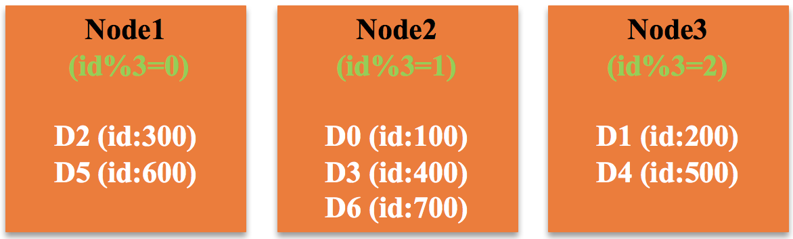
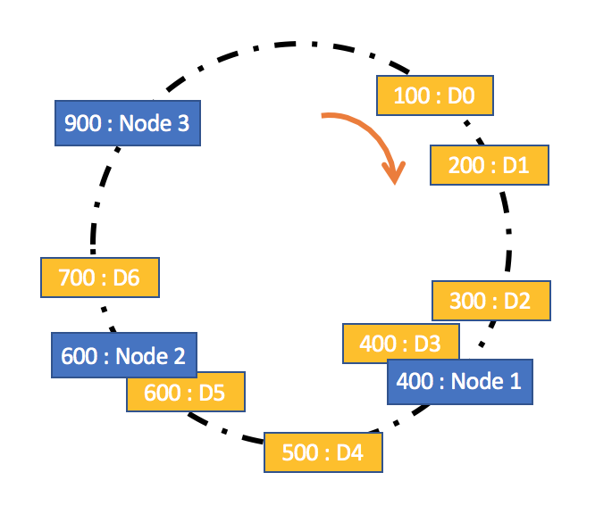
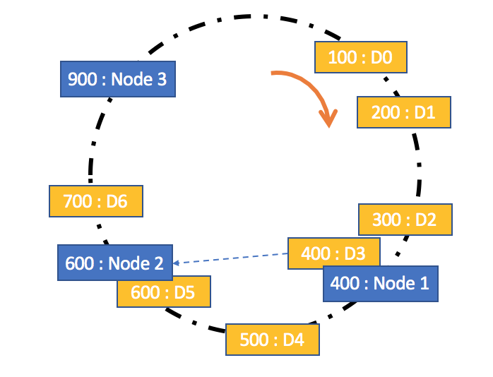
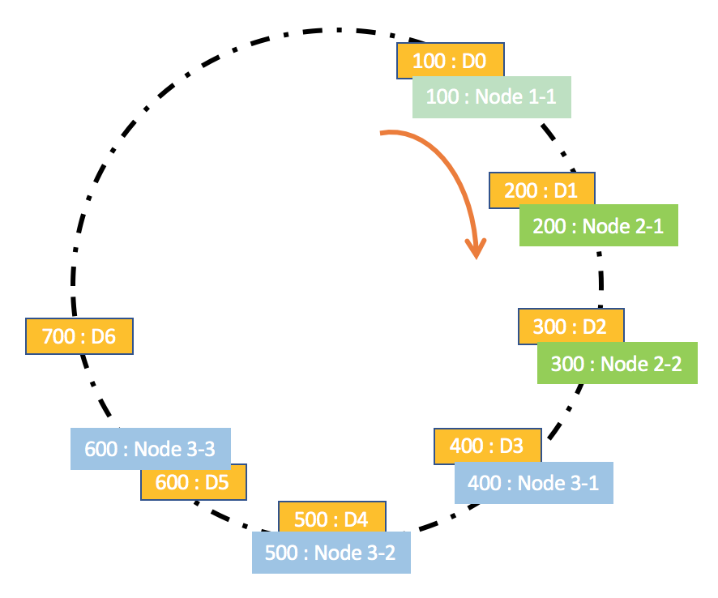
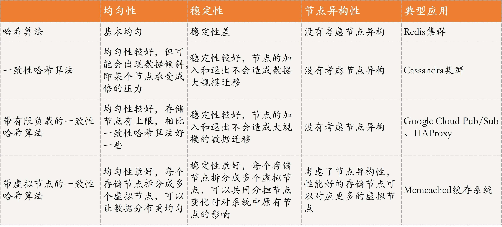
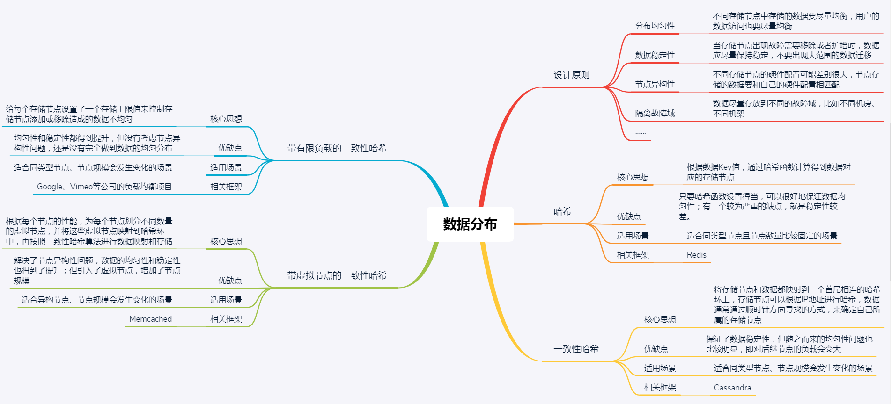

- 00 开篇词 四纵四横，带你透彻理解分布式技术.md.html
- 01 分布式缘何而起：从单兵，到游击队，到集团军.md.html
- 02 分布式系统的指标：啥是分布式的三围.md.html
- 03 分布式互斥：有你没我，有我没你.md.html
- 04 分布式选举：国不可一日无君.md.html
- 05 分布式共识：存异求同.md.html
- 06 分布式事务：All or nothing.md.html
- 07 分布式锁：关键重地，非请勿入.md.html
- 08 分布式技术是如何引爆人工智能的？.md.html
- 09 分布式体系结构之集中式结构：一人在上，万人在下.md.html
- 10 分布式体系结构之非集中式结构：众生平等.md.html
- 11 分布式调度架构之单体调度：物质文明、精神文明一手抓.md.html
- 12 分布式调度架构之两层调度：物质文明、精神文明两手抓.md.html
- 13 分布式调度架构之共享状态调度：物质文明、精神文明多手协商抓.md.html
- 14 答疑篇：分布式事务与分布式锁相关问题.md.html
- 15 分布式计算模式之MR：一门同流合污的艺术.md.html
- 16 分布式计算模式之Stream：一门背锅的艺术.md.html
- 17 分布式计算模式之Actor：一门甩锅的艺术.md.html
- 18 分布式计算模式之流水线：你方唱罢我登场.md.html
- 19 分布式通信之远程调用：我是你的千里眼.md.html
- 20 分布式通信之发布订阅：送货上门.md.html
- 21 分布式通信之消息队列：货物自取.md.html
- 22 答疑篇：分布式体系架构与分布式计算相关问题.md.html
- 23 CAP理论：这顶帽子我不想要.md.html
- 24 分布式数据存储系统之三要素：顾客、导购与货架.md.html
- 25 数据分布方式之哈希与一致性哈希：“掐指一算”与“掐指两算”的事.md.html
- 26 分布式数据复制技术：分身有术.md.html
- 27 分布式数据之缓存技术：“身手钥钱”随身带.md.html
- 28 分布式高可靠之负载均衡：不患寡，而患不均.md.html
- 29 分布式高可靠之流量控制：大禹治水，在疏不在堵.md.html
- 30 分布式高可用之故障隔离：当断不断，反受其乱.md.html
- 31 分布式高可用之故障恢复：知错能改，善莫大焉.md.html
- 32 答疑篇：如何判断并解决网络分区问题？.md.html
- 33 知识串联：以购买火车票的流程串联分布式核心技术.md.html
- 34 搭建一个分布式实验环境：纸上得来终觉浅，绝知此事要躬行.md.html
- 特别放送 Jackey：寄语天涯客，轻寒底用愁.md.html
- 特别放送 分布式下的一致性杂谈.md.html
- 特别放送 崔新：追根溯源，拨开云雾见青天.md.html
- 特别放送 徐志强：学习这件事儿，不到长城非好汉.md.html
- 特别放送 那些你不能错过的分布式系统论文.md.html
- 结束语 为什么说提升职业竞争力要从尊重、诚实开始？.md.html
- 捐赠
25 数据分布方式之哈希与一致性哈希：“掐指一算”与“掐指两算”的事
你好！我是聂鹏程。今天，我来继续带你打卡分布式核心技术。
在上一篇文章中，我带你了解了分布式存储系统的三个要素：顾客、导购和货架。其中，导购实现了分布式数据存储系统中数据索引的功能，包括存储数据时确定存储位置，以及获取数据时确定数据所在位置。
那么，在分布式系统中，具体是如何实现数据索引或数据分布的呢？目前最常用的方法就是哈希和一致性哈希。
接下来，我们就一起打卡数据分布式方式中的哈希与一致性哈希吧。
首先，我们来看一下数据分布设计的原则。数据分布设计原则是分布式存储系统设计的基本原则，指导了哈希和一致性哈希方法的选择和应用。
数据分布设计原则
其实，这里的数据分布，主要就是数据分片。相信你还记得，我在第24篇文章中与你分享分布式存储系统的导购时，已经和你提到数据分片技术，它解决了确定数据位置的问题，并着重与你讲述了按照数据特征进行划分的分片方法。今天，我主要与你讲解按照数据范围，采用哈希、一致性哈希等对数据划分的方法。
假设，现在有上百G数据需要进行分布式存储，也就是要存储到不同的节点上。提到这个问题，你可能立刻就会想到很多种方法，比如随机分布、范围分布、映射分布等。那么，我们应该如何选择到底要使用哪种方法呢？
在分布式数据存储系统中，存储方案选型时，通常会考虑数据均匀、数据稳定和节点异构性这三个维度。
从数据均匀的维度考虑，主要包括两个方面：
- 不同存储节点中存储的数据要尽量均衡，避免让某一个或某几个节点存储压力过大，而其他节点却几乎没什么数据。比如，现在有100G数据，4个同类型节点，通常希望数据存储时尽可能均衡，比如每个节点存储25G数据。
- 另外，用户访问也要做到均衡，避免出现某一个或某几个节点的访问量很大，但其他节点却无人问津的情况。比如，现在有1000个请求，对于上述存储数据的4个节点，处理用户访问请求尽量均衡，比如每个节点处理250个请求，当然这是非常理想的情况，实际情况下，每个节点之间相差不太大即可。
从数据稳定的维度考虑，当存储节点出现故障需要移除或者扩增时，数据按照分布规则得到的结果应该尽量保持稳定，不要出现大范围的数据迁移。
比如，现有100G数据，刚开始有4个同类型节点（节点1~4），每个节点存储25G数据，现在节点2故障了，也就是说每个节点需要存储100G/3数据。
数据稳定，就是尽可能只迁移节点2上的数据到其他节点上，而不需要对大范围或所有数据进行迁移存储。当然，如果有扩展同类型节点，也是尽可能小范围迁移数据到扩展的节点上。具体的迁移方法，可以采用下文介绍的一致性哈希方法。
从节点异构性的维度考虑，不同存储节点的硬件配置可能差别很大。比如，有的节点硬件配置很高，可以存储大量数据，也可以承受更多的请求；但，有的节点硬件配置就不怎么样，存储的数据量不能过多，用户访问也不能过多。
如果这种差别很大的节点，分到的数据量、用户访问量都差不多，本质就是一种不均衡。所以，一个好的数据分布算法应该考虑节点异构性。
当然，除了上面这3个维度外，我们一般还会考虑隔离故障域、性能稳定性等因素。
隔离故障域，是为了保证数据的可用和可靠性。比如，我们通常通过备份来实现数据的可靠性。但如果每个数据及它的备份，被分布到了同一块硬盘或节点上，就有点违背备份的初衷了。所以，一个好的数据分布算法，应该为每个数据映射一组存储节点，这些节点应该尽量在不同的故障域，比如不同机房、不同机架等。
性能稳定性是指，数据存储和查询的效率要有保证，不能因为节点的添加或者移除，造成存储或访问性能的严重下降。
了解了数据分布的设计原则后，接下来我们再看看主流的数据分布式方法，哈希和一致性哈希吧。其中，哈希和一致性哈希是数据分布的基础方法，在不同场景下，数据分布设计的原则需要考虑的维度也不一样。随着维度的增加，一致性哈希又可进一步演进为带有限负载的一致性哈希和带虚拟节点的一致性哈希方法。
接下来，我们就一起看看这4种方法的具体原理和应用场景吧。
数据分布方法
哈希是指，将数据按照提前规定好的函数（哈希函数）映射到相应的存储节点，即进行一个哈希计算，得到的结果就是数据应该存储的节点。
一致性哈希同样是采用哈希函数，进行两步哈希：
- 对存储节点进行哈希计算，也就是对存储节点做哈希映射；
- 当对数据进行存储或访问时，首先对数据进行映射得到一个结果，然后找到比该结果大的第一个存储节点，就是该数据应该存储的地方。我会在下面的内容中，与你详细介绍其中的原理。
总结来讲，哈希是一步计算直接得到相应的存储节点，而一致性哈希需要两步才可以找到相应的存储节点。这，是不是就是“掐指一算”与“掐指两算”的事呢？
接下来，我们先一起看看哈希的具体原理吧。
哈希
哈希是一种非常常用的数据分布方法，其核心思想是，首先确定一个哈希函数，然后通过计算得到对应的存储节点。我们通过一个具体的例子来看一下吧。
假设，有三个存储节点，分别为Node1、Node2和Node3；现有以下数据，ID的范围为[0,1000]：D0:{ id:100, name:‘a0’}、D1:{ id:200, name:‘a1’} 、D2:{ id:300, name:‘a2’}、D3:{ id:400, name:‘a3’}、D4:{ id:500, name:‘a4’}、D5:{ id:600, name:‘a5’}和D6:{ id:700, name:‘a6’}。
假设，哈希函数为“id%节点个数”，通过计算可以得到每个数据应该存入的节点。在这个例子中，哈希函数是“id%3”，结果为0的数据存入Node1、结果为1的数据存入Node2、结果为2的数据存入Node3。
如图所示，Node1将存储数据D2（300%3=0）和D5（600%3=0），Node2将存储数据D0（100%3=1）、D3（400%3=1）和D6（700%3=1），Node3将存储数据D1（200%3=2）和D4（500%3=2）。

可以看出，哈希算法的一个优点是，只要哈希函数设置得当，可以很好地保证数据均匀性，但有一个较为严重的缺点，就是稳定性较差。
比如，随着数据量的增加，三个节点的容量无法再满足存储需求了，需要再添加一个节点。这时，哈希函数变成了 id%4，原先存储在那三个节点的数据需要重新计算，然后存入相应节点，即需要大规模的数据迁移，显然会降低稳定性。
所以，哈希方法适用于同类型节点且节点数量比较固定的场景。目前，Redis就使用了哈希方法，你可以再回顾下第10篇文章“分布式体系结构之非集中式结构：众生平等”中的相关内容。
接下来，我们再看看一致性哈希吧。
一致性哈希
一致性哈希是指将存储节点和数据都映射到一个首尾相连的哈希环上，存储节点可以根据IP地址进行哈希，数据通常通过顺时针方向寻找的方式，来确定自己所属的存储节点，即从数据映射在环上的位置开始，顺时针方向找到的第一个存储节点。
我们看看如何用一致性哈希方法，来实现上述案例的数据存储吧。
如图所示，假设数据D0～D7按照ID进行等值映射，即映射值与ID值相等，比如数据D0映射到哈希环上的值为100，数据D1映射到哈希环上的值为200······；同时，假设存储节点Node1、Node2和Node3映射到哈希环上的值分别为400、600、900。
按照规则，D0，D1，D2和D3顺时针方向的下一个存储节点为Node1，因此Node1将存储数据D0（id = 100）、D1（id = 200）、D2（id = 300）和D3（id = 400）；同理，Node2将存取数据D4（id = 500）和D5（id = 600），Node3将存取数据D6（id = 700）。

可以看出，一致性哈希是对哈希方法的改进，在数据存储时采用哈希方式确定存储位置的基础上，又增加了一层哈希，也就是在数据存储前，对存储节点预先进行了哈希。
这种改进可以很好地解决哈希方法存在的稳定性问题。当节点加入或退出时，仅影响该节点在哈希环上顺时针相邻的后继节点。比如，当Node2发生故障需要移除时，由于Node3是Node2顺时针方向的后继节点，本应存储到Node2的数据就会存储到Node3中，其他节点不会受到影响，因此不会发生大规模的数据迁移。
所以，一致性哈希方法比较适合同类型节点、节点规模会发生变化的场景。目前，Cassandra就使用了一致性哈希方法，你可以再回顾下第10篇文章“分布式体系结构之非集中式结构：众生平等”中的相关内容。
一致性哈希方法虽然提升了稳定性，但随之而来的均匀性问题也比较明显，即对后继节点的负载会变大。有节点退出后，该节点的后继节点需要承担该节点的所有负载，如果后继节点承受不住，便会出现节点故障，导致后继节点的后继节点也面临同样的问题。
那么，有没有更好的方法来解决这个问题呢？
Google在2017年提出了带有限负载的一致性哈希算法，就对这个问题做了一些优化。
带有限负载的一致性哈希
带有限负载的一致性哈希方法的核心原理是，给每个存储节点设置了一个存储上限值来控制存储节点添加或移除造成的数据不均匀。当数据按照一致性哈希算法找到相应的存储节点时，要先判断该存储节点是否达到了存储上限；如果已经达到了上限，则需要继续寻找该存储节点顺时针方向之后的节点进行存储。
我们看看如何用带有限负载的一致性哈希方法，来实现上述案例的数据存储吧。
如图所示，假设每个存储节点设置的上限值为3，按照一致性哈希算法，当存储数据D3（id = 400）时，会发现应该存储到Node1中，但Node1已经存储了三个数据D0（id = 100）、D1（id = 200）和D2（id = 300），达到了存储上限，因此会存储到该节点顺时针方向的下一个节点Node2中。当然，在存储前，也会先检查Node2是否达到了存储上限，如果达到了，会继续寻找其他节点。

如果你想要了解该算法的详细内容，可以阅读“Consistent Hashing with Bounded Loads”这篇论文。
带有限负载的一致性哈希方法比较适合同类型节点、节点规模会发生变化的场景。目前，在Google Cloud Pub/Sub、HAProxy中已经实现该方法，应用于Google、Vimeo等公司的负载均衡项目中。
其实，哈希、一致性哈希、带有限负载的一致性哈希，都没有考虑节点异构性的问题。如果存储节点的性能好坏不一，数据分布方案还按照这些方法的话，其实还是没做到数据的均匀分布。
接下来，我们再看一种主要针对存储节点为异构节点场景的方法，即带虚拟节点的一致性哈希吧。
带虚拟节点的一致性哈希
带虚拟节点的一致性哈希方法，核心思想是根据每个节点的性能，为每个节点划分不同数量的虚拟节点，并将这些虚拟节点映射到哈希环中，然后再按照一致性哈希算法进行数据映射和存储。
假设，Node1性能最差，Node2性能一般，Node3性能最好。以Node1的性能作为参考基准，Node2是Node1的2倍，Node3是Node1的3倍。
因此，Node1对应一个虚拟节点Node1_1，Node2对应2个虚拟节点Node2_1和Node2_2，Node3对应3个虚拟节点Node3_1、Node3_2和Node3_3。
假设，虚拟节点Node1_1、Node2_1、Node2_2、Node3_1、Node3_2、Node3_3的哈希值，分别为100、200、300、400、500、600。
那么，按照带虚拟节点的哈希一致性方法， 数据D0和D6按顺时针方向的下一个虚拟存储节点为Node 1-1，因此节点Node1将会存储数据D0（id = 100）和D6（id = 700）；同理，Node2将会存储数据D1（id = 200）和D2（id = 300），Node3将会存储数据D3（id = 400）、D4（id = 500）和D5（id = 600）。

可以看出，带虚拟节点的一致性哈希方法比较适合异构节点、节点规模会发生变化的场景。目前Memcached缓存系统实现了该方法，我会在第27篇文章中与你详细分析。
这种方法不仅解决了节点异构性问题，还提高了系统的稳定性。当节点变化时，会有多个节点共同分担系统的变化，因此稳定性更高。
比如，当某个节点被移除时，对应该节点的多个虚拟节点均会移除，而这些虚拟节点按顺时针方向的下一个虚拟节点，可能会对应不同的物理节点，即这些不同的物理节点共同分担了节点变化导致的压力。
当然，这种方法引入了虚拟节点，增加了节点规模，从而增加了节点的维护和管理的复杂度，比如新增一个节点或一个节点故障时，对应到虚拟节点构建的哈希环上需要新增和删除多个节点，数据的迁移等操作相应地也会很复杂。
四种数据分布方法对比
为方便理解与记忆，我再通过一个表格和你对比分析下这四种方法吧。请注意，以下方法之间的对比都是相对的比较，实际性能优劣与哈希函数的设定以及具体的数据场景密切相关。

知识扩展：数据分片和数据分区，有何区别？
首先，我们一起回忆一下第20篇文章中提到的数据分区。
数据分区是从数据存储块的维度进行划分，不同的分区物理上归属于不同的节点。比如，现在有2个节点Node1和Node2，2个数据分区Partition1和Partition2，Partition1属于Node1、Partition2属于Node2。
对于数据分区，可用于存储不同的数据，也可以用来存储相同的数据实现数据备份。数据分区可以归结为是“货架”相关的关键技术，也就是为数据存储提供合适的位置。具体实例，参见第20篇文章中介绍的Kafka分区的内容。
接下来，我们再看一下数据分片。
数据分片是从数据的维度进行划分，是指将一个数据集合按照一定的方式划分为多个数据子集，不同的数据子集存在不同的存储块上，而这些存储块可以在不同的节点上，也可以在同一节点上。
具体的数据分片策略可以采用我今天和你分享的哈希、一致性哈希等方法。数据分片是实现“导购”的关键技术，目的是构建索引，为数据确定位置，包括存储数据和查询数据时确定数据位置。具体例子，可参考上文的相关内容。
由此可见，数据分片和数据分区是两个不同的概念，且属于分布式存储系统中不同角色的技术，前者是实现“导购”的关键技术，后者是“货架”相关的技术，不可直接等同。
但正因为一个是导购相关的关键技术，一个是货架相关的技术，一个提供确定数据索引的位置，一个提供合适的数据存储位置，因此正如我在第24篇文章中所说，这两个技术是可以共存的，比如下面这个例子。
有3个节点{Node1, Node2, Node3}，有3个分区{Partition1, Partition2, Partition3}用于存储用户信息，每个节点上1个分区。现在有1000个用户信息需要存储，用户id编号为[1,1000]，为防止将所有信息存储到一个节点上，所有用户发起请求时，该节点成为瓶颈，为此需要将这1000个用户信息存储到3个节点上。
假设，我们采用最简单的哈希方法，用户id%节点总数(3)进行哈希映射，id%3 = 0的所有用户信息存储到节点1的Partition1， id%3=1的所有用户信息存储到节点2的Partition2，id%3=2的所有用户信息存储到节点3的Partition3。
总结
今天，我主要带你学习了数据分布式方法中的哈希与一致性哈希。
首先，我带你了解了分布式数据存储系统中，设计数据分布方法需要考虑的原则，主要包括数据均匀性、稳定性和节点异构性。
其次，基于数据分布设计原则，我为你介绍了哈希、一致性哈希、带有限负载的一致性哈希和带虚拟节点的一致性哈希方法，并以例子进行辅助讲解，以便于你理解和学习。
最后，我再通过一张思维导图来归纳一下今天的核心知识点吧。

加油，相信你通过对本讲的学习，对分布式数据存储系统中“导购”的角色有了更深入的理解，对分布式数据分布方法的原理，以及如何针对不同场景进行选型有了一定的认知。加油，赶紧行动起来，为你的应用场景选择一种合适的数据分布方法，并实践起来吧！
思考题
今天，我主要与你分享的是哈希方法相关的数据分布方法，你还知道哪些常用的数据分布方法吗？
我是聂鹏程，感谢你的收听，欢迎你在评论区给我留言分享你的观点，也欢迎你把这篇文章分享给更多的朋友一起阅读。我们下期再会！
© 2019 - 2023 Liangliang Lee. Powered by gin and hexo-theme-book.